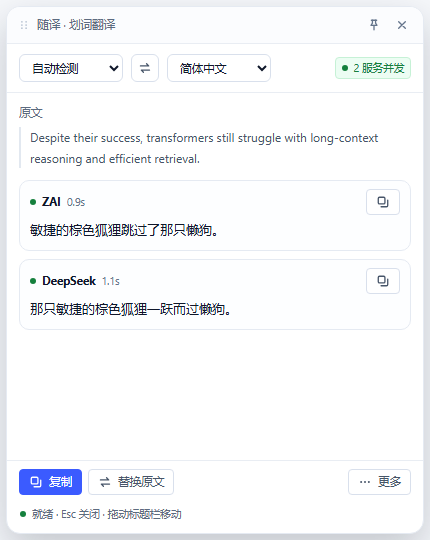
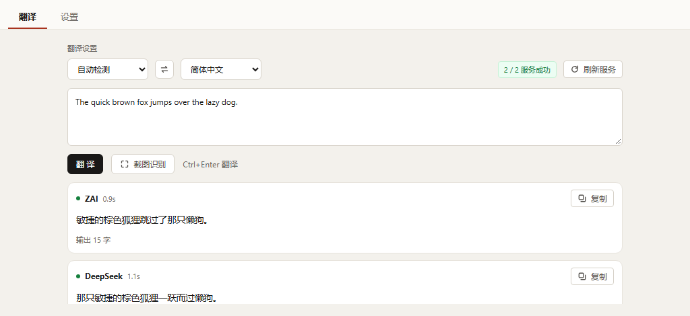
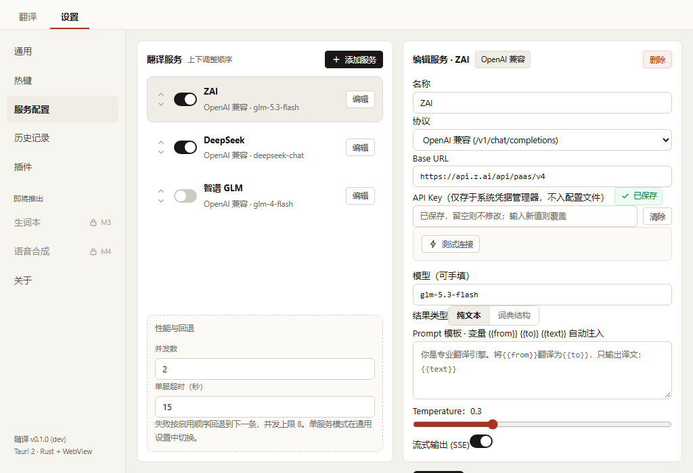

Alt+D
划词翻译
在任意应用里选中文字，译文窗口出现在光标附近并流式出稿。窗口失焦自动隐藏，也可以钉住留在屏幕上。
选中文字按 Alt+D，框选屏幕按 Alt+S，输入框里按 Alt+T。 三者都不用切窗口，译文来自你自己的服务。

热键固定为这三个，暂不支持自定义。
在任意应用里选中文字，译文窗口出现在光标附近并流式出稿。窗口失焦自动隐藏，也可以钉住留在屏幕上。
冻结鼠标所在的那块屏幕，拖动框选后在本机识别文字，图片不上传。只框一块屏，不支持跨屏拖选。
读取当前输入框的内容，翻译后原位替换。写回前会核对焦点是否还在原窗口，不在就把译文放进剪贴板。


Windows 11 自带 WebView2；Windows 10 若提示缺失，装一次 WebView2 运行时。
设置 → 服务配置 → 添加服务，协议选 OpenAI 兼容，填 Base URL、API Key 和模型名。 DeepSeek、智谱、Kimi、Ollama 都能直连。
确认 Key、网关与模型三件事都对，再开始用。
翻译消耗你自己的 API 额度。同时启用多个服务时，一次翻译会同时用掉这几个服务的额度。
只在 Windows 上构建与验证过。macOS 和 Linux 尚未实现，界面上只会提示当前平台不支持。
截图识别的语言取决于系统 OCR 语言包。只装中文包时，识别英文会有把小写 l 认成大写 I 这类误差。
朗读用系统自带语音，音色一般，也还没有语速和音色选择。
插件不能联网，只能读写剪贴板，且需要先申请权限。
输入框转译写回后要撤销，得用目标程序自己的 Ctrl+Z。
API Key 只写进 Windows 凭据管理器，配置文件里零明文。
需要 Node 18 以上、pnpm，以及 Rust stable 的 MSVC 工具链。
pnpm install
pnpm tauri dev # 开发调试
pnpm tauri build # 打包安装程序打 v* 标签会自动触发 .github/workflows/release.yml， 在 GitHub 的 Windows 机器上构建并发布。